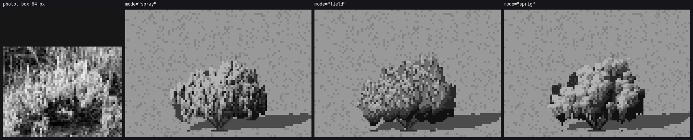
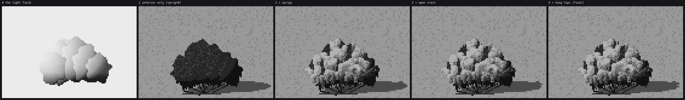
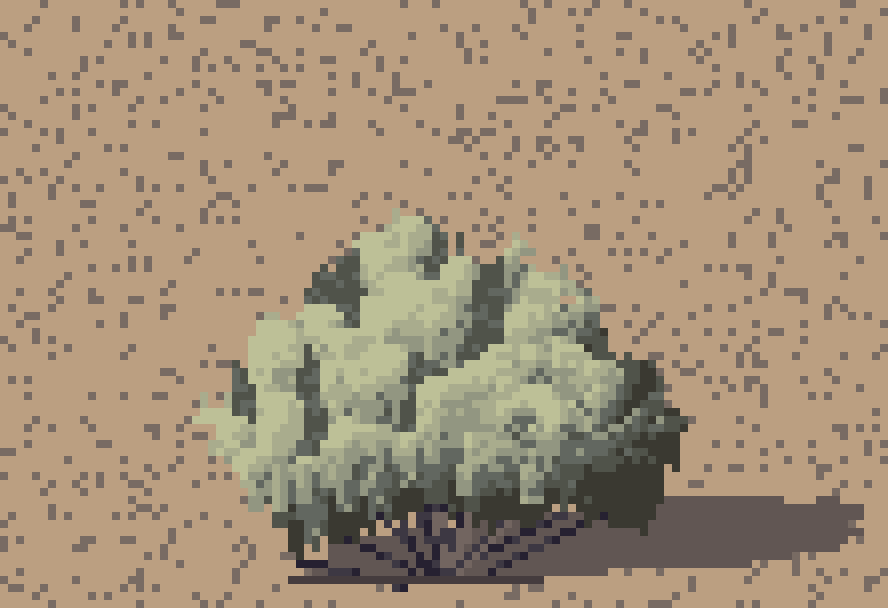
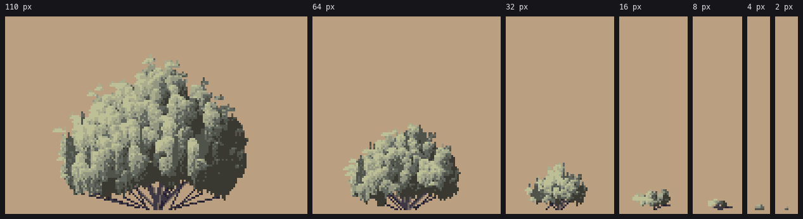

3. Sagebrush: grouped sprigs
Ready from about 16 to 110 px. At the largest size it drifts toward cauliflower (see the end).
What the bush is
From the photos, and from the downsampled sheet on page 1:
- A few thick, twisted, shreddy grey trunks splay from one root crown.
- The tiny leaves mass at the twig ends into upright sprays. At 64 px these are pale tongues 2 to 4 px wide with rounded tops and dark slots between.
- The sprays gather into 3 to 7 clumps, so the silhouette is lumpy.
- Near the ground the sprays thin and a dark tangle of stems shows.
- The bush is wider than tall, and the foliage comes nearly to the ground.
The wrong models first
I built four models before one was right. Three of them are still in sage.py, behind mode=:

Same seed, same size, greyscale, 5×. From figs.fig_sage_models.
- Spheres on a trunk (the first, since overwritten): a little broccoli tree. Sage isn't a tree.

mode="spray": upright capsules hanging from each clump's top, lit at the cap and darkening down. This was a weeping umbrella until I let caps start lower down the clump. It's close, but the sprays are all one size and the mass reads as knitted.mode="field": Ferrari's way for a hedge. A continuous light field, quantized to three calm base values, with marks carrying the light (upright lit dabs whose density follows the field, dark slots in the light, pale flecks in the shadow). It gives a legible mound, but the critic called the texture rain: even 1-px ticks at one spacing everywhere, with a scalloped bottom.

mode="sprig", the one that stayed. It came from the critic's round-3 note ("group the ticks into clumps and open gaps between them") and from the downsampled sheet, which had shown that since the start.
The sprig bush, layer by layer

figs.fig_sage_layers: the real sage.paint_bush, with sprig=0, tips=0 and _open_crest switched off in turn. The light field is drawn in the sprite's own canvas, so it sits a little off the others.
0. Clumps and the light field
paint_bush lays out 2 to 10 clumps across a dome (one per clump_px = 9 px of width), plus a centre crown clump. Their bottoms rise toward the middle, so the skirt stays low at the sides and the stems show in the centre. Trunks are clean-run polylines from the root crown to each clump, drawn first so everything covers them.
_light_field gives every pixel a continuous step value. It uses the clump's own normal blended with the whole bush's dome normal (big_form=0.55: the big form wins a little). The two light families are kept apart at the terminator. Then there's a dark band along each clump's bottom, where it tucks under the clump in front, and a darker foot:
lit = np.clip(nn @ L, 0, 1)
s = np.where(lit < p["term"], 0.9 + 1.6 * lit / p["term"] + p["ambient"], # shadow family: steps ~1-2.5
3.1 + 2.4 * (lit - p["term"]) / (1 - p["term"])) # light family: 3.1-5.5
s = s - np.clip((dy - 0.25) / 0.75, 0, 1) * p["fall"] * 0.6 # dark band under the clump
s = s - np.clip((0.3 - bv) / 0.3, 0, 1) * 1.2 # the dark foot of the bush
The field is never painted directly. When I painted fields directly I got soap.
1. The interior
What shows in the gaps is two dark values, darker in the low 22%. Then the foot is made ragged: each column's lowest 0 to 2 pixels are cut away, and a few columns send a stem to the root crown. This replaced the row of scallops the critic flagged twice.
q = np.where(f < 2.6, 0, 1).astype(np.int16)
q = np.where((gy - Y) < h * 0.22, 0, q)
for x in range(W):
col = np.nonzero(m[:, x])[0]
if len(col) == 0:
continue
yb = col.max()
cut = int(rng.integers(0, 3))
for k in range(cut):
m[yb - k, x] = False
if rng.random() < 0.12 and yb < gy - 1 and abs(x - cx) < w * 0.35:
for (sx, sy) in sp.clean_line(x, yb - cut + 1, cx + (x - cx) * 0.3, gy):
cv.px(sx, sy, SAGESTEM, 0 if rng.random() < 0.6 else 1)
2. Sprigs
This is the core. Sprig positions are sampled from the interior mask, weighted toward the top (((gy - y) / h) ** 0.7: sprigs crowd the crown and the base stays tangle). They're painted from farthest to nearest, which here means top to bottom. Each one is a small wedge whose value it reads once, from the field at its own centre:
spw = p["sprig_px"] or float(np.clip(w / 14.0, 2.0, 5.5)) # width: 2 px at 28 px, 4 at 56
sph = spw * (2.2 + 0.8 * np.clip((w - 50) / 60, 0, 1)) # taller on near bushes
...
for j in range(int(hh)):
t = j / max(1.0, hh - 1)
half = ww / 2 * (0.55 + 0.45 * np.sin(np.pi * min(1.0, 0.25 + t * 0.9))) * (1 - 0.45 * t)
if j == 0:
half *= 0.6 # rounded top
...
if not m[y, x] and j > 1: # only the top may break out
continue
side = (x - xc) * sunside
s = v0 + (0.9 if j == 0 else 0.4 if j == 1 else 0) - 1.8 * t # lit cap, darker down
s += 0.6 if side > 0.4 else (-0.6 if side < -0.4 else 0) # sun side a step up
if (x + (j // 2)) % 2 == 0 and t > 0.3: # inner streaks
s -= 0.7
s += rng.normal(0, 0.25)
if shadow:
s = min(s - 0.6, 2.6) # a shadow sprig never enters the light family
Reading the value once per sprig, not once per pixel, is what groups the marks. A sprig is one decision, lit or shadowed, and not a speckle sampled from a gradient. Letting only the top two rows break the interior mask is what makes the silhouette out of sprig tops.
3. Open the crest
Interior pixels left showing at the top of the silhouette read as a dark outline, the "magazine cut-out" SYNTHESIS warns about. _open_crest removes any dark interior pixel with nothing above it, twice:
def _open_crest(cv, rounds=2):
for _ in range(rounds):
m = cv.mat == SAGE
above = np.vstack([np.zeros((1, cv.w), bool), cv.mat[:-1] > 0])
kill = m & ~above & (cv.step <= 1)
cv.mat[kill] = 0
It only runs above 16 px wide. Below that it eats the bush.
4. Twig tips, stalks, snow
One-pixel tips sit on 35% of the cap pixels. In autumn (stalks), pale upright flower stalks rise above the crown. In winter (snow), cap pixels turn to snow, lit or shaded.
The final bush in colour:

The ground in this plate is s1_sage.bush_on_ground's quick 12% speckle, which is louder than the scene ground on page 6. The critic flagged it, and I never brought the plates up to the scenes.
Colour, and the mint mistake

My first coloured sage: mint cotton with teal shadows. The critic: "the shadow side is teal". The Hungate photo in low sun goes deep olive toward black.
The fix is on page 5: an olive shadow shift, and a lit end warmed toward straw that grows with the sun's warmth.
Every size

scene.sage_sprite at seven widths, summer morning, 3×.
- 16 px and up: the full painter. Sprig width scales with the bush, about 2 px at 28 px wide and up to 5.5.
- 5 to 14 px: the same painter with fewer, bigger clumps (
clump_px = max(6, w/2.2)) and one trunk. - 2 to 5 px: a dab with a dark foot row, a lit top on the sun side and a step down on the shadow side.
- Under 2.2 px: a dark foot pixel under a lit one. It never vanishes, because a vanishing shrub is a pop when the camera pulls back. The willow student's critic had to ask for that twice, so I built it in from the start.
Where it falls short

110 px (left) and 80 px (right), the last thing I tuned. The sprigs are there, but at this size they read as a heap of rounded bumps: cauliflower. The trunks under the 110-px bush also splay as straight ruled spokes.
At hero size the photo's sage is streakier and more see-through: longer, thinner upright sprays with more gaps and more stems. My sprig count and height scale up with size, but the gaps don't. I'd next add a gap fraction that rises with width, so the interior shows through in slots between sprig columns, and taller, narrower sprigs above about 80 px. The critic saw the same drift in the hero images: "the big shrubs right of centre".
Bitterbrush uses this same painter with holes and twiggier tips (kind="bitter"), and it reads only as a darker sage. It needs its own form: more open, irregular, stems showing, small leaf clusters. I didn't get to it.